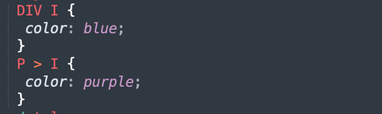
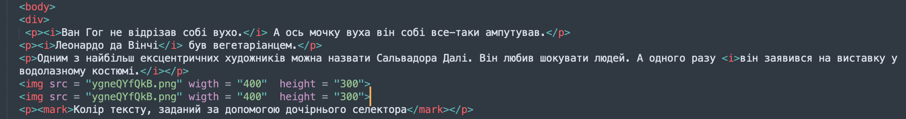
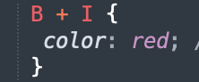
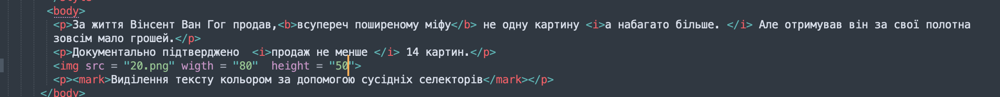

| Lab1 | Lab2 | Lab3 | Lab4 | Lab5 | Lab6 | Lab7 | Lab8 | Lab9 |
|---|
|
|
Дочірні селектори Ван Гог не відрізав собі вухо. А ось мочку вуха він собі все-таки ампутував. Леонардо да Вінчі був вегетаріанцем. Одним з найбільш ексцентричних художників можна назвати Сальвадора Далі. Він любив шокувати людей. А одного разу він заявився на виставку у водолазному костюмі.  Колір тексту, заданий за допомогою дочірнього селектора Універсальні селектори Знаменитий художник Пабло Пікассо в молодості був дуже бідний. Одного разу йому навіть довелося топити піч власними картинами, Один стиль встановлено для всіх елементів за допомогою універсального селектора Сусідні селектори За життя Вінсент Ван Гог продав,всупереч поширеному міфу не одну картину а набагато більше. Але отримував він за свої полотна зовсім мало грошей. Документально підтверджено продаж не менше 14 картин.  Виділення тексту кольором за допомогою сусідніх селекторів |